scale_x_continuous() and scale_y_continuous() are the default
scales for continuous x and y aesthetics. There are three variants
that set the trans argument for commonly used transformations:
scale_*_log10(), scale_*_sqrt() and scale_*_reverse().
scale_x_continuous(name = waiver(), breaks = waiver(), minor_breaks = waiver(), labels = waiver(), limits = NULL, expand = waiver(), oob = censor, na.value = NA_real_, trans = "identity", position = "bottom", sec.axis = waiver()) scale_y_continuous(name = waiver(), breaks = waiver(), minor_breaks = waiver(), labels = waiver(), limits = NULL, expand = waiver(), oob = censor, na.value = NA_real_, trans = "identity", position = "left", sec.axis = waiver()) scale_x_log10(...) scale_y_log10(...) scale_x_reverse(...) scale_y_reverse(...) scale_x_sqrt(...) scale_y_sqrt(...)
| name | The name of the scale. Used as the axis or legend title. If
|
|---|---|
| breaks | One of:
|
| minor_breaks | One of:
|
| labels | One of:
|
| limits | A numeric vector of length two providing limits of the scale.
Use |
| expand | Vector of range expansion constants used to add some
padding around the data, to ensure that they are placed some distance
away from the axes. Use the convenience function |
| oob | Function that handles limits outside of the scale limits
(out of bounds). The default replaces out of bounds values with |
| na.value | Missing values will be replaced with this value. |
| trans | Either the name of a transformation object, or the object itself. Built-in transformations include "asn", "atanh", "boxcox", "exp", "identity", "log", "log10", "log1p", "log2", "logit", "probability", "probit", "reciprocal", "reverse" and "sqrt". A transformation object bundles together a transform, its inverse,
and methods for generating breaks and labels. Transformation objects
are defined in the scales package, and are called |
| position | The position of the axis. "left" or "right" for vertical scales, "top" or "bottom" for horizontal scales |
| sec.axis | specify a secondary axis |
| ... | Other arguments passed on to |
For simple manipulation of labels and limits, you may wish to use
labs() and lims() instead.
sec_axis() for how to specify secondary axes
Other position scales: scale_x_date,
scale_x_discrete
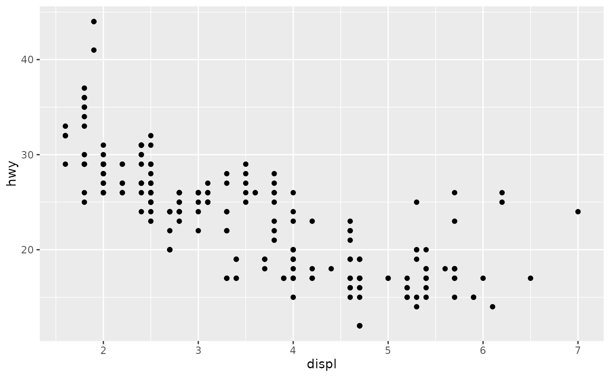# Manipulating the default position scales lets you: # * change the axis labels p1 + scale_x_continuous("Engine displacement (L)") + scale_y_continuous("Highway MPG")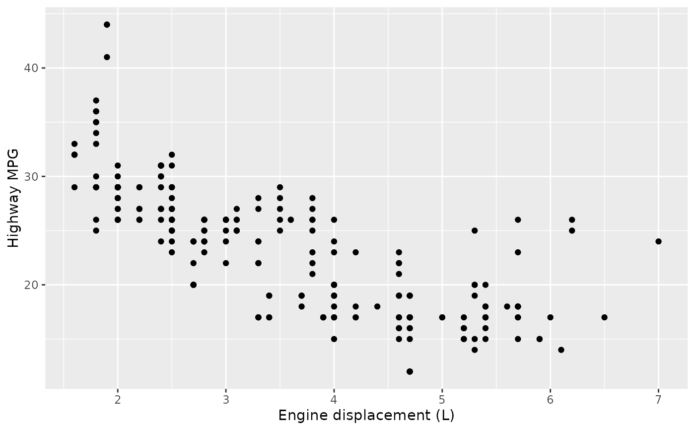# You can also use the short-cut labs(). # Use NULL to suppress axis labels p1 + labs(x = NULL, y = NULL)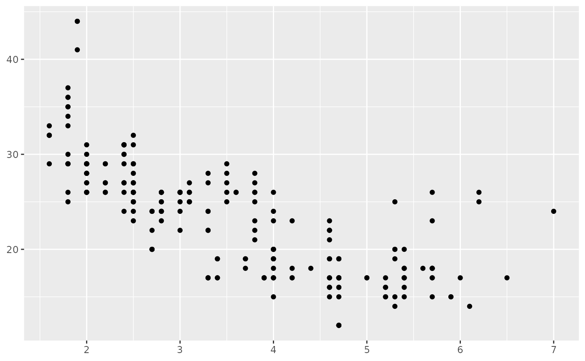#> Warning: Removed 27 rows containing missing values (geom_point).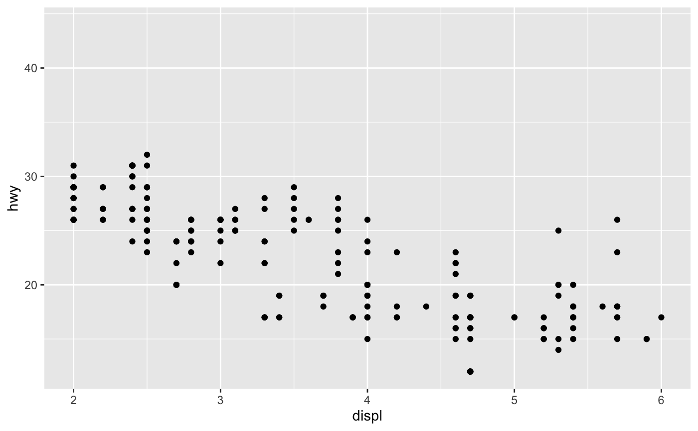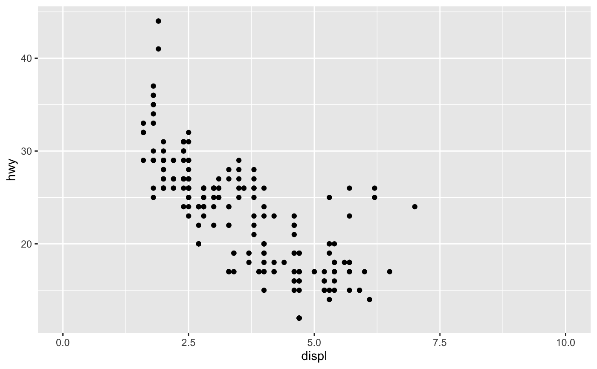#> Warning: Removed 27 rows containing missing values (geom_point).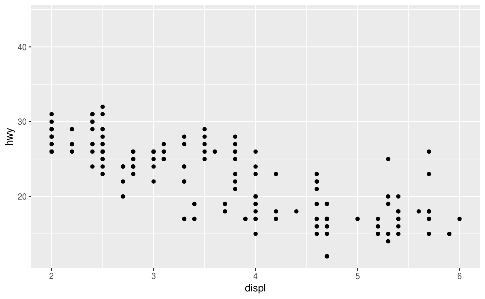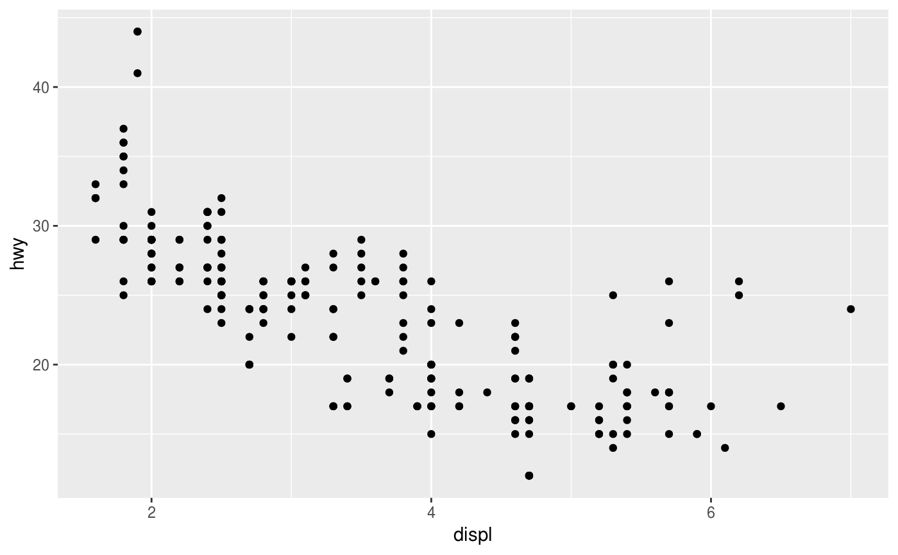# * choose your own labels p1 + scale_x_continuous( breaks = c(2, 4, 6), label = c("two", "four", "six") )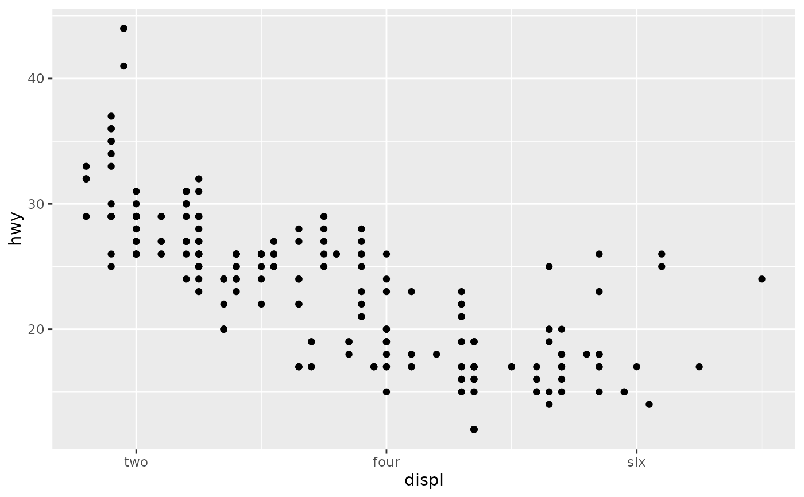# Typically you'll pass a function to the `labels` argument. # Some common formats are built into the scales package: df <- data.frame( x = rnorm(10) * 100000, y = seq(0, 1, length.out = 10) ) p2 <- ggplot(df, aes(x, y)) + geom_point() p2 + scale_y_continuous(labels = scales::percent)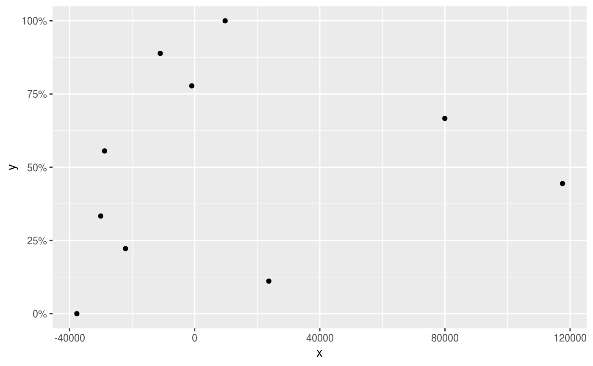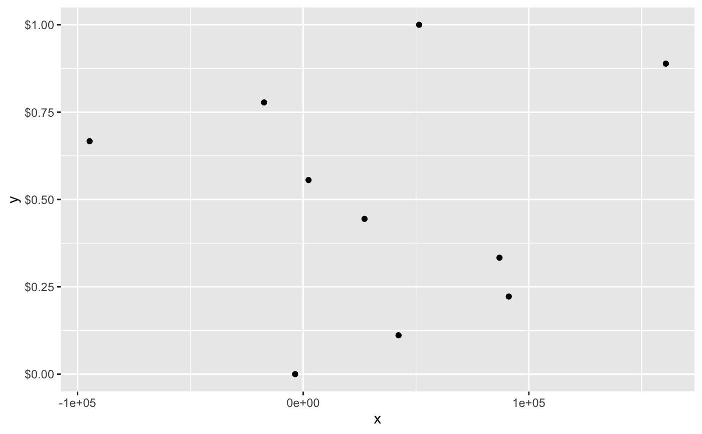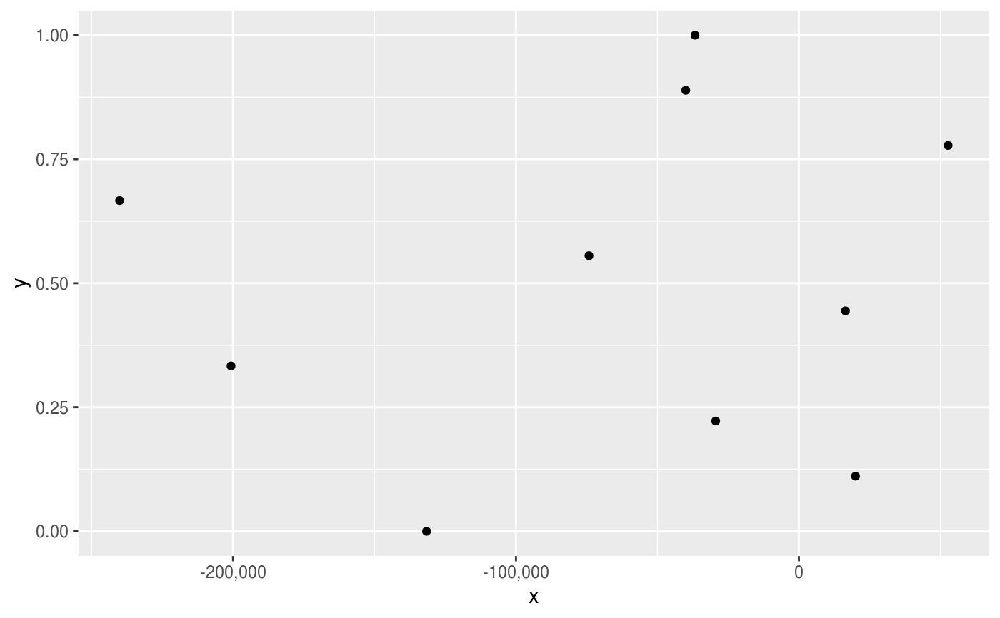# You can also override the default linear mapping by using a # transformation. There are three shortcuts: p1 + scale_y_log10()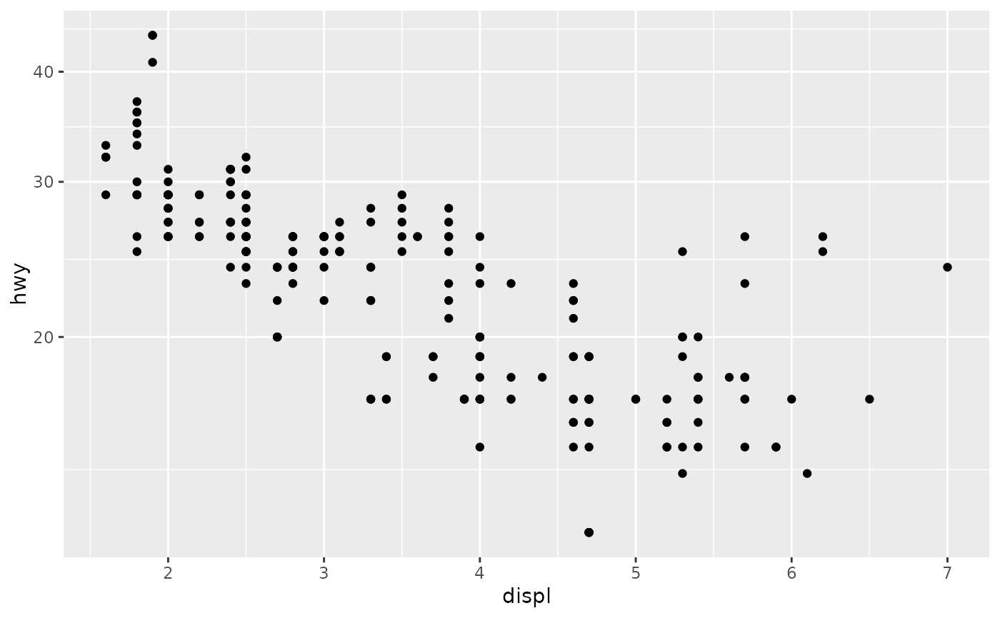p1 + scale_y_sqrt()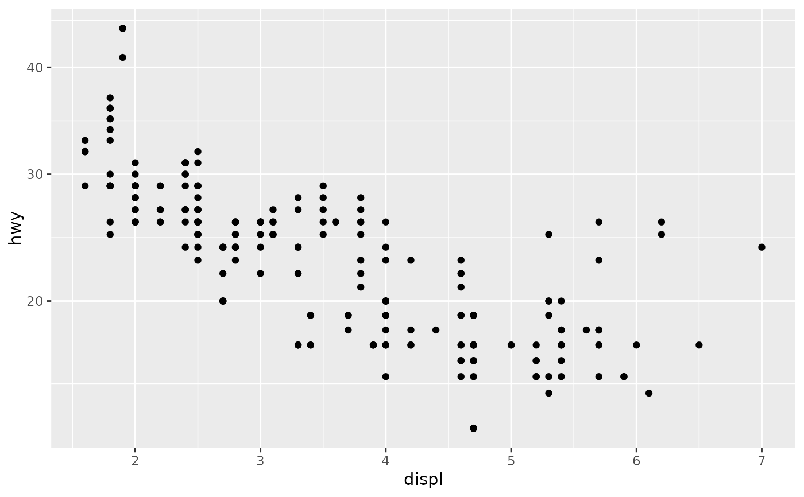p1 + scale_y_reverse()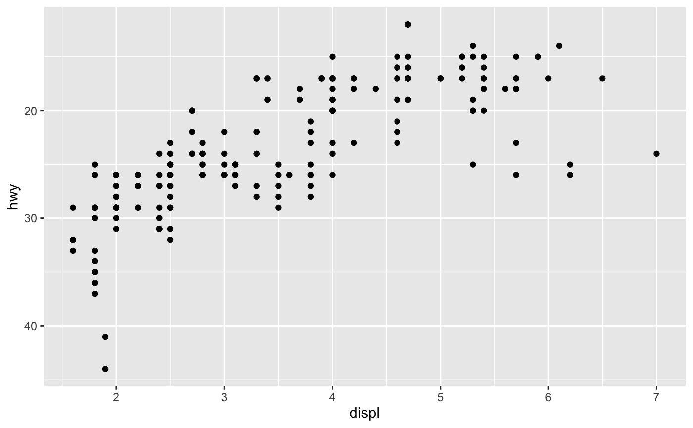# Or you can supply a transformation in the `trans` argument: p1 + scale_y_continuous(trans = scales::reciprocal_trans())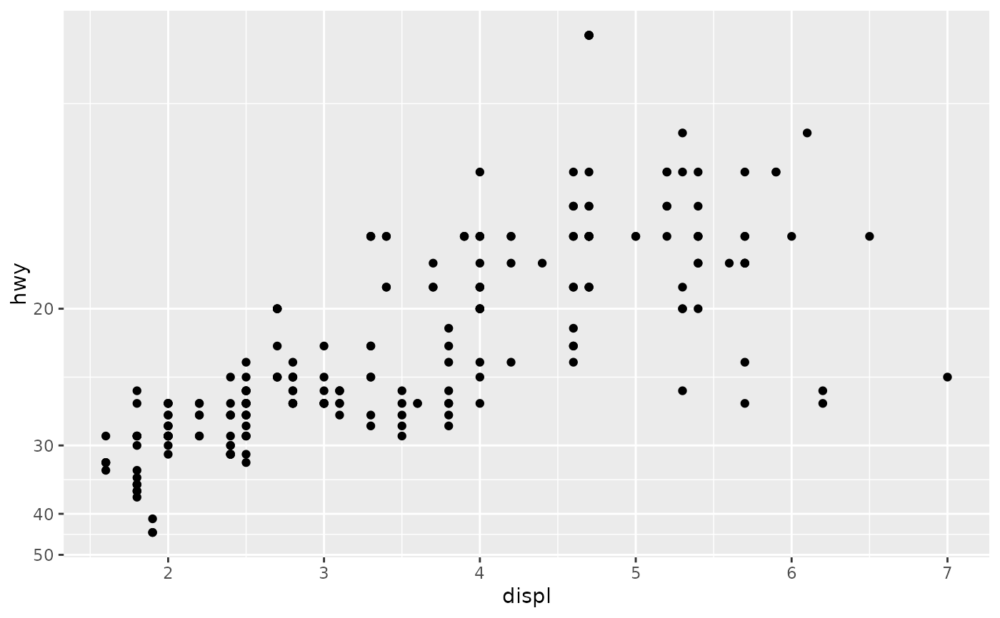# You can also create your own. See ?scales::trans_new